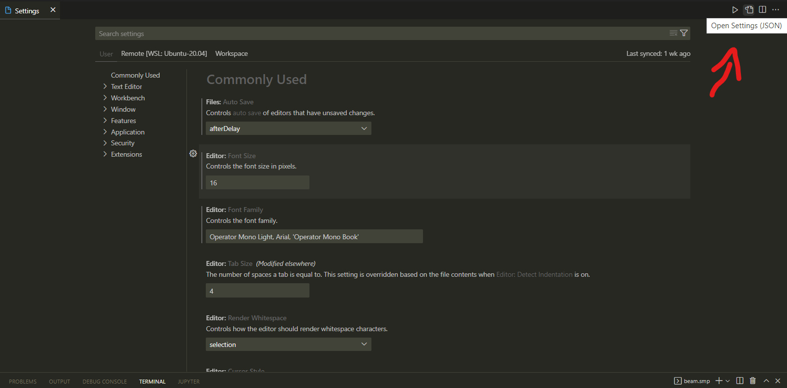
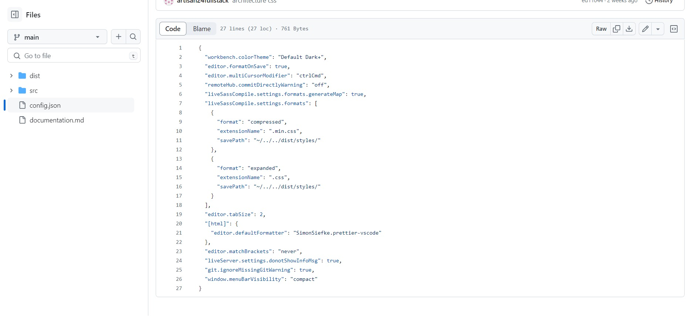

Create a framework CSS with SASS
Install 2 extension in Visual studio code
1) Live Server (Ritwick Dey)
- Launch a development local Server
with live reload feature for static & dynamic pages
2) Live Sass Compiler (Glenn Marks)
- Compile Sass or Scss to CSS at realtime.
Configurate settings.json in VSC
(File > Preferences > Settings + click top right)

Add my file config.json (repository)

Understand concepts in Sass
- variable with a dollar symbol $
- import with a symbol underscore _
- extension .scss